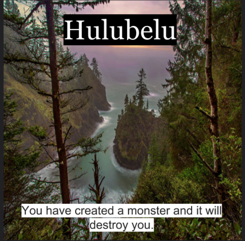

Design a Band Challenge
Challenge Information
Design thinking is when you get other people's perspective in order to better sell products. We are studying this to get feedback from other people to improve our product. The steps for deep design thinking is first having a open mind and using it to create something for you personally or for others. The next step for deep design thinking is to make sure that you use other people feeback to make sure your product has a variety of people ideas, so other people can realate to your product.The steps we did in class to make the album cover is by first picking ideas we like for our album cover. An example to this is fonts that you would like you like for your album. Another step we did is colors that we would want are band cover color to have like warm or cool colors. The last step we did was go around in our group and then ask are group memebers their opinion and also what they wanted their album cover to like.
Album Cover
Band Biography
The band named Hulubelu originates from the city where actors and musicians are born, Los Angeles. The members of the band are Prince Jackson(Lead Singer), Bobbi Brown(Backup Singer), Lisa Presley(Electric Guitar), Rocco Ritchie(Drums). Prince, Bobbi, Lisa, and Rocco all come from legend parents. They all grew up listening to music and seeing their parents in the music business, but at the end of the day they just wanted to make their parents proud by making a band. Growing up they all heard a lot of Pop, Rock, and Soulful music. So they decided that their band will have a mix of all different kinds of genres of music like Pop, Rock, Country, and Soul. When they would all come together in rehearsals they would laugh together and say " man our parents have created a monster in us ” and “ We are making good songs that will change and destroy the world forever. ” But for majority of the people in band like Prince, Lisa, and Bobbi they wanted to make a band to help keep their parents in spirit. The band members also want to prove to people that they are not just a legend kid but they are able to do things on their own. They play gigs in Los Angeles but have been becoming more famous lately and are thinking about doing a tour. They try as much as possible to relate too fans and also play songs from their parents to show they love them their fans but also keep their parents in spirt with them for each gig, to keep them in spirt.